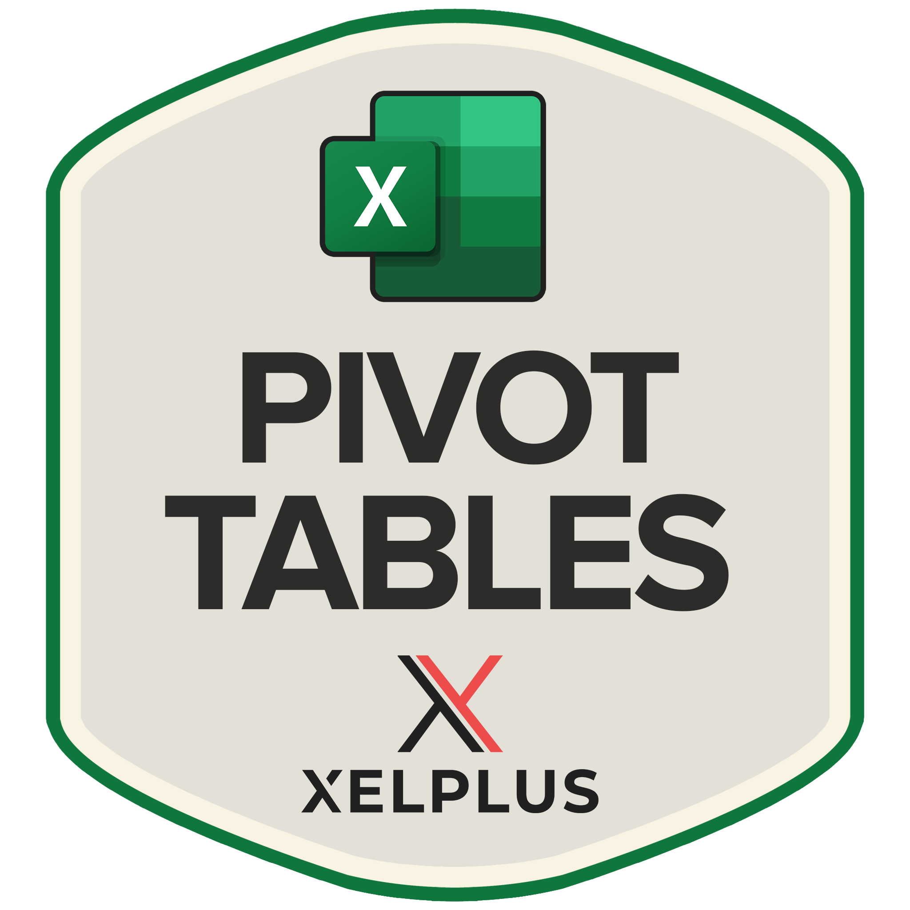

{kind=link}
Skills

SQL
Excel
Microsoft Office 365

My name is Stephen Barratt, a Computer Science graduate and aspiring Data Analyst.
In 2021, I graduated from the University of Dundee, with a Computer Science BSc (Hons) Degree. This was towards the end of the Cornonavirus pandemic and I was unsure which career path I wanted to persue. I decided for that reason to instead persue and develop a skill that would be benefical no matter which career path I ultimately decided to go down. The skill I choose was communication. I found a sales job as an Independent Sales Advisor, going door to door selling the services of BT (British Telecom) Broadband to the general public. This was a commision only role, meaning that that I only got paid for the sales I would make and there was no base salary. This payment structure helped me to develop a great work ethic, understanding the harder I worked the more I would get out. Talking to many different people, from a variety of backgrounds and walks of life, six days a week, allowed me to develop my communication skills and ultimately achieve what I had always wanted to next.
A dream of mine has always been to travel and explore. In July 2023 that dream became a reality, as the Covid restrictions had been lifted and I finally had the opportunity to experience more of the world. I solo travelled South East Asia for six months an experience of a lifetime and something I can only attribute being able to do with the confidence and interpersonal skills gained from my sales role. I then spent the next two years on a working holiday visa in Australia, living in two different cities: Sydney and Melbourne. I worked a number of different jobs along the way, such as a Warehouse storeperson and for the most part in hospitality, as a grill chef. These jobs allowed me to work in different environments and as a part of a team and further develop skills such as teamwork.
Why become a Data Analyst?
From an early age we learn a lot about language and mathematics. In language we learn how to string words together, to form sentences turning them into stories. In mathematics, we learn how to make sense of numbers. Although it is rare that these two aspects ever meet; no one ever teaches us how to tell stories with numbers. With improvements in AI and Technology it has enabled us to amass increasing amounts of data and as a result there is a growing demand to make sense of this data. Knowing there is a story in the data but the tools don't know what the story is, this is what I find most interesting as it allows you as the analyst or communicator of the information to bring the story to life for the audience.
My Roadmap to becoming a Data Analyst
The first step on my roadmap to becoming a data analyst was to complete the CompTia Data + Qualification accredited by CompTIA. This is a professional international industry-recognised qualification, recommended for those with 18-24 months job experience as a Data Analyst. Throughout the learning process I developed a project all the way from the data concepts stage through to the final visualisation, to help reinforce the knowledge learnt and to prepare for the exam. The project was called ‘Need a Movie Recommendation?’ and can be found in the Projects section below. Upon passing the exam, it provided me with a great deal of confidence and the qualification taught me the essential skills of a Data Analyst such as data mining, manipulating data, visualising data and reporting on data.
The next step on my roadmap was to develop the necessary technical skills, to ensure that I am suitably employable as a data analyst. These skills include the following: Microsoft Excel, Databases, Statistics, Python and Power BI.
I started by developing my knowledge of Microsoft Excel, first I read the book "Data Analysis in Microsoft Excel" by Alex Holloway. This provided me with a beginner to intermediate understanding of the platform as well as formulas and functions. I then enrolled in multiple online courses by XelPlus, these are taught by Leila Gharani, winner of the Microsoft Excel MVP Award. I saw a drastic improvement in my Excel skills after completing these courses, the teaching style allowed me to practice as I learnt, completing challanges and quizzes to really reinforce the knowledge. I stared by learning the "Excel Essentials" before moving onto "Pivot Table Mastery" and finally "Buisness Charts in Excel". Following the completion of these courses my confidence in Excel grew tenfold and I was able to create my own projects and my first dashboard which can be found below in the projects section "Dashboard to display staff metrics".
Why I built a Portfolio Website?
As most of my education in Data Analysis has come from books and online platforms. I wanted to give myself practical experience, applying the knowledge I have learnt, to real world data. Undertaking a self-led Data Analysis project requires a significant amount of independent learning, which can help to develop critical thinking and self discipline, two valuable skills in any aspect of life.
The goal of the portfolio is to demonstrate to employers my ability to work with data and solve problems. During the process of working through different projects and populating the portfolio, the website has become more like a journal for myself, to see the progress that I have made and the skills that I have developed. Providing a source of motivation to continue to learn and grow my skillset.
You can view my Projects below. I have added a summary report to provide insight as well as linking my GitHub repositories.
This is my first project where I took on the role of Data Analyst for a hotel company.
The Objective: To help the Senior Management team with effective decision-making, so the company can meet its strategic goals.
Skills Demonstrated:
Excel, Formulas, Pivot Tables, Charts, Data Visualisation
Report SpecificationIn this project I took on the role of a member of the HR Department for an American Company.
The Objective: The manager has asked for a report outling serveral key staff metrics from an employee dataset. Optimally the report will update with a single click.
Skills Demonstrated:
Excel, Pivot Tables, Charts, Sliders, Dashboards
Dashboard Source CodeThe project contains real data on job postings for data roles in 2023, with insights on job titles, locations, salaries, skills and other employment related information.
The Objective: Explore the UK job market focusing on Data Analysis roles highlighting: Highest paid jobs, in demand skills, skills related to higher salaries and when job listings are most frequent.
Skills Demonstrated:
SQL, PostgreSQL, Excel
Written Report Source Code
